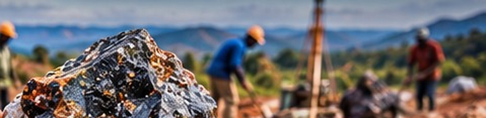
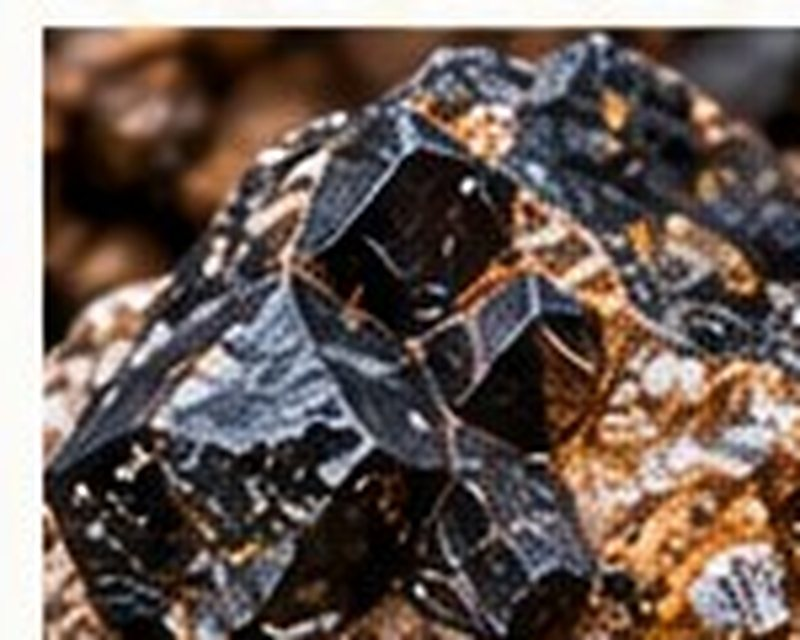

Alpha Tantalum & Tin
A tantalum and tin project with strong surface indicators, artisanal activity and potential for associated critical minerals.
- Tantalum
- Tin
- Critical minerals
- Artisanal activity
- Growth potential
Members only. Draft content from the design mock-up. Information is indicative and subject to technical review and agreement. Facts and figures require competent technical review before release.
Project overview
Alpha Tantalum comprises two exploration licences (PR16516 and PR16517) in the Democratic Republic of the Congo, prospective for tantalum (tantalite) and tin (cassiterite), with encouraging surface samples and artisanal activity.
The project also has potential for associated critical minerals, including rare earth elements.
Guilgal International, through Alpha Tantalum SARL, is advancing technical studies, exploration and development options in partnership with local stakeholders.
Key highlights
- Two exploration licences (PR16516 & PR16517)
- Tantalum and tin mineralisation with strong surface samples
- Artisanal mining activity
- Potential for associated critical minerals (REE, Rb)
- Pathway from exploration to pilot processing and scale-up
- Support from local partners and financial institutions
Project location

Geological setting

- Located within a prospective tin-tantalum belt.
- Pegmatites and associated granitic intrusions.
- Evidence of tantalum, tin and associated critical minerals.
- Accessible by existing regional infrastructure.
Artisanal activity

- Active artisanal mining for tantalite and cassiterite.
- Confirms mineralisation at surface.
- Provides valuable local knowledge and target indicators.
- Supports early-stage bulk sampling and pilot processing.



Development pathway
- 1Complete detailed geological mapping and sampling
- 2Geophysical surveys to refine targets
- 3Drilling programme to test key targets
- 4Preliminary mineral inventory and scoping study
- 5Pilot processing and metallurgical test work
- 6Development study and financing options
Indicative timeline
An indicative timeline will be added once it has been reviewed and approved.
Partnership opportunity
Alpha offers exposure to tantalum, tin and potential rare earth elements, with a pathway to pilot processing and scale-up. We welcome strategic partners and funding institutions.
Information is indicative and subject to technical review and agreement.